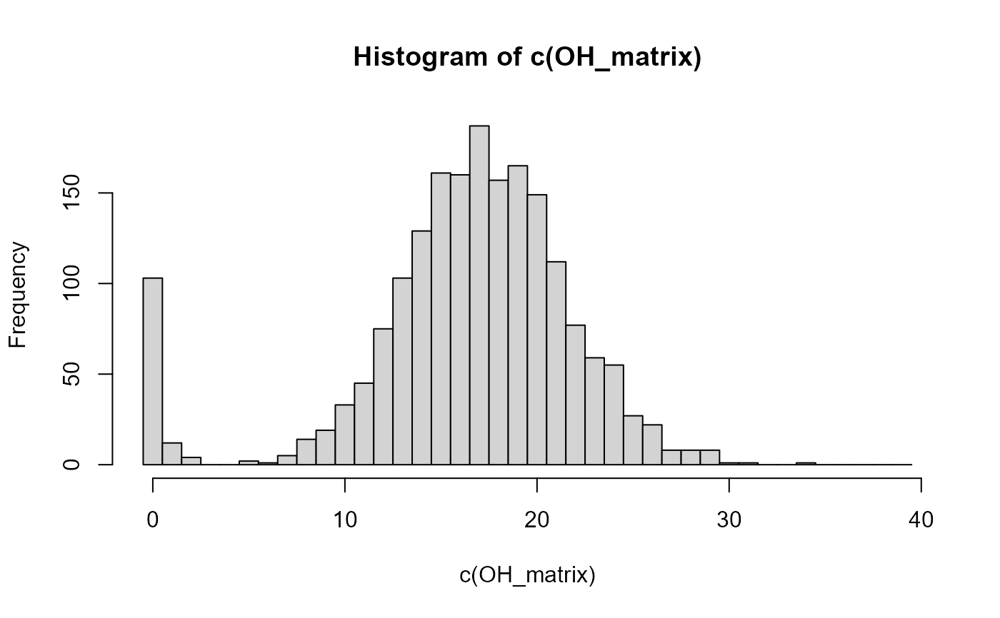

Count opposing homozygous SNPs between pairs of individuals
CountOH.RdQuick identification of likely parents, as the number of opposing homozygous (OH) SNPs is expected to be zero for parent- offspring pairs in absence of genotyping errors, and greater than zero for all other pairs.
Arguments
- x
Either a matrix, dataframe or similar where the first two columns are individual IDs, or a vector with IDs. In the second case, you may provide
ID2, and the output will be an ID1 x ID2 matrix; else the output will be an ID1 x ID1 matrix. Non-genotyped individuals are included in the results with allNA's, and a warning.- ID2
optional second vector with IDs
- GenoM
numeric matrix with genotype data: One row per individual, one column per SNP, coded as 0, 1, 2, missing values as a negative number or NA. Row names must be individual IDs, column names are ignored. You can reformat data with
GenoConvert, or use other packages to get it into a genlight object and then useas.matrix.- max_OH
stop counting OH's for a pair if this value is reached, to reduce computation time. Ignored if negative value or equal to total number of SNPs.
- quiet
suppress messages
Details
Counting the number of opposing homozygous (OH) SNPs is much faster
than calculating likelihoods, and does not rely on an estimated genotyping
error rate. It can therefore be useful during quality control, or to help
figure out problems when assignment rate with sequoia is
lower than expected.
See also
CalcPairLL to calculate likelihoods for pairs,
CalcOHLLR to calculate OH for a pedigree,
CalcMaxMismatch for calculation of the maximum OH used by
sequoia to filter potential parent-offspring pairs.
Examples
offspring_ids <- with(LH_HSg5, ID[BirthYear==2001])
candidate_father_ids <- with(LH_HSg5, ID[BirthYear==2000 & Sex==2])
OH_matrix <- CountOH(offspring_ids, candidate_father_ids, GenoM=Geno_HSg5)
#> ℹ Some IDs are not among rownames of GenoM
hist(c(OH_matrix), breaks=c(0:40)-.5)

# with high quality SNP data, there is often a clear separation in OH counts
# between parent-offspring pairs (here: OH<3) and others (here: OH>4).
# BUT: non-PO close relatives may have very low OH counts by chance,
# and true PO pairs may have fairly high OH counts due to genotyping errors.